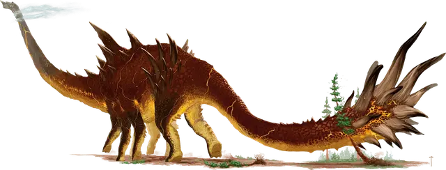

Алтизавр
Altisaur
Громадный Монстр (Динозавр), без мировоззрения

Класс Доспеха 15 (природный доспех)
Хиты 198 (12к20 + 72)
Скорость 40 футов
| мод | спас | ||
|---|---|---|---|
| СИЛ | 28 | +9 | +9 |
| ЛОВ | 6 | −2 | −2 |
| ТЕЛ | 23 | +6 | +6 |
| мод | спас | ||
|---|---|---|---|
| ИНТ | 3 | −4 | −4 |
| МДР | 12 | +1 | +1 |
| ХАР | 7 | −2 | −2 |
Навыки Восприятие +11
Чувства пассивное Восприятие 21
Опасность 13 (10000 опыта)
Бонус мастерства +5
Особенности
Сопротивление магии. Алтизавр совершает с преимуществом спасброски от заклинаний и прочих магических эффектов.
Действия
Мультиатака. Алтизавр совершает одну атаку Топотом и одну атаку Хвостом. Алтизавр не может совершить обе атаки по одной и той же цели.
Топот. . Рукопашная атака оружием: +14 к попаданию, досягаемость 10 футов, одна цель. Попадание: 33 (7к6 + 9) дробящего урона. Если цель - существо Огромного размера или меньше, оно должно преуспеть в спасброске Силы Сл 22, иначе упадёт ничком.
Хвост. . Рукопашная атака оружием: +14 к попаданию, досягаемость 20 футов, одна цель. Попадание: 45 (8к8 + 9) дробящего урона, и цель отталкивается на расстояние до 20 футов по горизонтали от алтизавра.
Описание
Когда дети Аннама впервые начали заселять миры Материального плана, Всеотец создал гигантских динозавров, чтобы они жили бок о бок с ними в качестве компаньонов. Первобытная магия, использованная для создания динозавров, все еще пронизывает их существо и проявляется в красочных линиях, похожих на шрамы, на их огромных телах. Некоторые из этих древних динозавров сохранились в вечных джунглях, скрытых анклавах и других землях, нетронутых остальным миром.
Алтизавр
Алтизавр - титанический зауропод, которого часто сравнивают с ходячей горой, со скалистыми хребтами, узорами элементальной энергии, которые светятся на его шкуре подобно потокам лавы, и восемью массивными ногами размером с древние деревья. Он создает овраги там, где его хвост волочится по земле. Кажется, что вокруг его головы часто собираются облака, так как они могут достигать высоты 150 футов над землей.